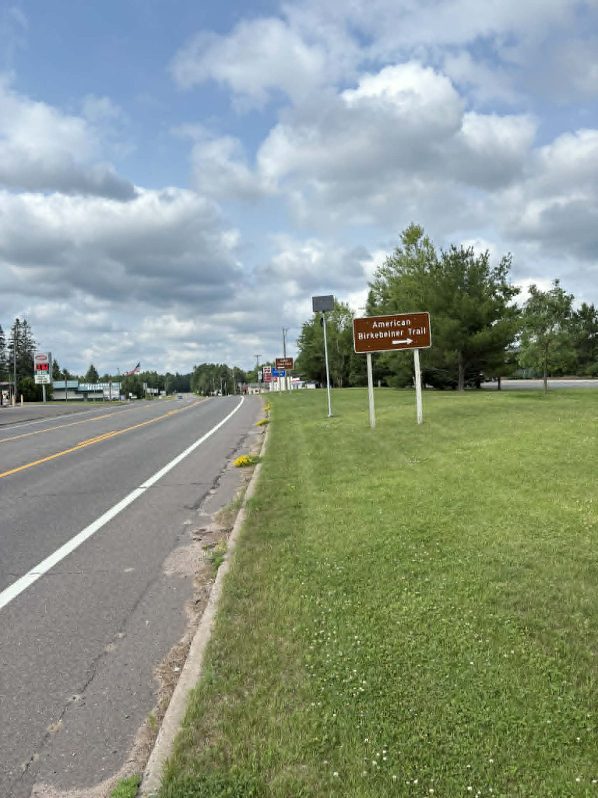

Where we're fighting
These cameras are already up across the Northwoods, in small towns people assume are too small to bother with. Pick your area to see what's there and how to fight it where you live.
Ashland / Bayfield County, WI
Records obtained from the Bayfield County Sheriff, July 29, 2026. The county's Flock program runs on three separate agreements, not one. The signed order forms and the invoices add up to about $17,500 a year. Together those three agreements cover six license plate readers and two solar video cameras. The video cameras were added to existing plate-reader poles in October 2025 and the agreement was signed by the Sheriff. No public body voted on any of the three.
A plate reader photographs a car and reads the plate. A video camera watches a place, and the people in it. Flock's own website describes a "Guardian Mode" that "automatically detects and locates people and vehicles in the camera's field of view," and under a heading reading "Follow Movements Automatically" says it will "identify people and vehicles, zooming in for identifying details."
In fairness to Flock: the company says that feature "captures fixed points in time, not continuous tracking," and it states plainly that its cameras do not use facial recognition. We have seen nothing to contradict that. Our objection is not that the county bought something sinister. It is that a camera that watches people is a different decision than a camera that reads plates, and nobody in Bayfield County was ever asked about either one.

One regional group covers all these fights right now.
Hayward / Sawyer County, WI
One regional group covers all these fights right now.
Superior / Douglas County, WI
One regional group covers all these fights right now.
Where these numbers come from
Every county figure on this page came out of a public records request to the agency that runs the cameras. Not from a leak, not from an estimate, and not from Flock's marketing. We asked, and they answered in writing.
We do not post the records themselves. The productions contain personal information, and republishing that would do to other people exactly what we are objecting to.
You do not have to take our word for it. The same records are available to you, from the same agencies, under Wisconsin's Public Records Law. It is one email and it takes about ten minutes.
If you are checking a specific figure and want to know which agency and which request it came from, use the contact form and ask. We will tell you.
Don't see your town? Check the DeFlock map to find cameras near you, then reach out and we'll help you start a local page.